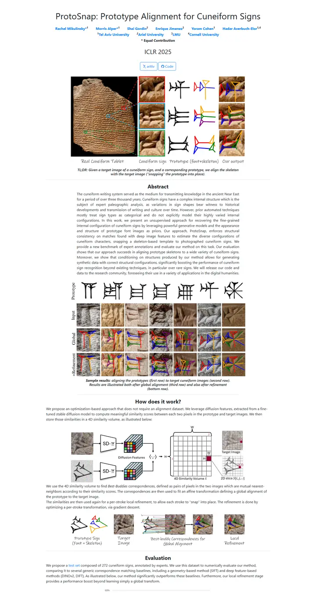

ProtoSnap: Prototype Alignment for Cuneiform Signs
粘土板の横に置かれた博物館の解説ラベル。素朴なシステムフォント、リンク色の青い名前、そして手書き注釈入りの図が一枚ですべてを語る。

表示されたページと照合済みです。
選んだ理由
ティザーが見事です。色分けした切り抜きと手書き風のラベルで、粘土板と出力が結び付けられています。ラベル付きの結果グリッドや手法の図も同じ視覚言語でそろえられ、アブストラクトのカラムもきれいに中央に収まっています。
以下の説明と DESIGN.md 本文は英語です。コーディングエージェントが同じ一つの版を読めるよう、翻訳していません。
概要
カラーパレット
タイポグラフィ
Bootstrap system stack
ProtoSnap: Prototype Alignment for Cuneiform Signs
Abstract · Method · Results · BibTeX — 0123456789
SFMono/Consolas
ProtoSnap: Prototype Alignment for Cuneiform Signs
Abstract · Method · Results · BibTeX — 0123456789
余白と形
ページの構成要素
ガイドライン
似たスタイル

CRAFT: Training-Free Cascaded Retrieval for Tabular QA
淡い青焼きブルーの整った製品マニュアル。どの段階もそれぞれの色の縁をまとっている。

Efficient Self-Evaluation for Diffusion Language Models via Sequence Regeneration
青、すみれ、アプリコットの夜明け色に染まった角丸カードの整った積み重ね。署名はグラデーションのワードマーク。

FIGMA: Towards FIne-Grained Music retrievAl
温かみのある紙に刷った音楽誌。赤いキッカーの下に重厚な Newsreader の見出し、結果を示す大きな赤いセリフ数字、柔らかなクリーム色の枠に収まった図。

GuideDog: A Real-World Egocentric Multimodal Dataset for Blind and Low-Vision Accessibility-Aware Guidance
静かな学術書の一頁。セリフ体の一段組み、リンクには牛血色のインク、自分の行だけをほんのり染める表。

LaMI: Augmenting Large Language Models via Late Multi-Image Fusion
丁寧に作られた学会配布資料。Noto Serif の見出し、ネイビーの枠線ボタン、交互に現れる柔らかなグレーの帯。

PairCoder++: Pair Programming as a Universal Paradigm for Verified Code-Driven Multimodal and Structured-Artifact Generation
すっきりとした白い製品ページ。青いお知らせの帯、墨のように黒いピル型ボタン、柔らかな影のカードに載ったすべての図。